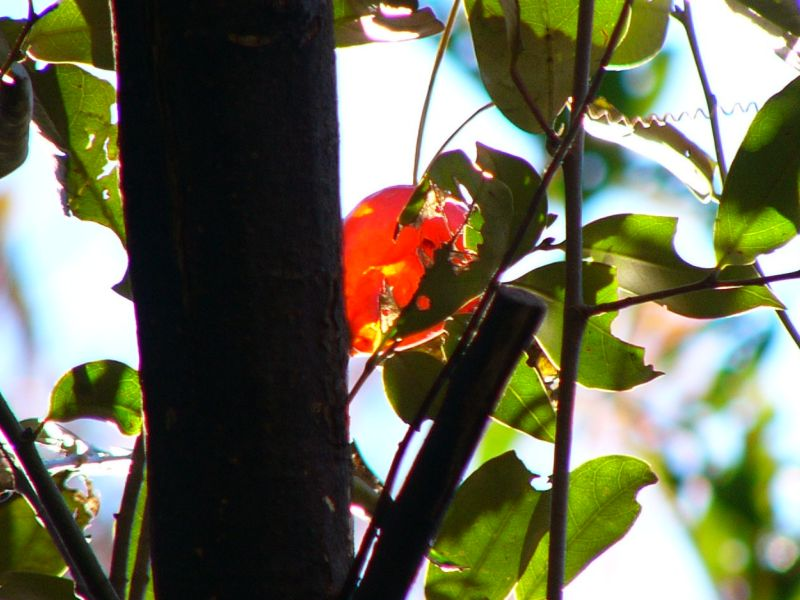

四季折々
からす瓜
からす瓜
霜柱が立つようになると，黄葉して我慢していた広葉樹の葉が一斉に落ち始めます。
そんな冬景色の中で，からす瓜の実が朱に色づいていました。

霜柱が立つようになると，黄葉して我慢していた広葉樹の葉が一斉に落ち始めます。 そんな冬景色の中で，からす瓜の実が朱に色づいていました。

葉が落ちた枝に残っていたからす瓜です。
こんなにきれいなまま残っているということは，
本当はカラスも食べないのかもしれませんね (^^;。
葉が落ちた枝に残っていたからす瓜です。 こんなにきれいなまま残っているということは， 本当はカラスも食べないのかもしれませんね (^^;。
この画像は，落ちていたからす瓜を，木の切り株にのせて写したものです。
本当の自然の画像ではありませんが，絵になったと感じて，写したものです。

この画像は，落ちていたからす瓜を，木の切り株にのせて写したものです。 本当の自然の画像ではありませんが，絵になったと感じて，写したものです。